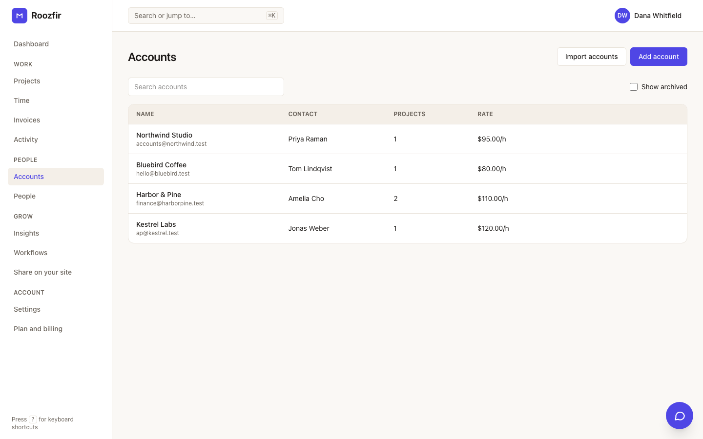
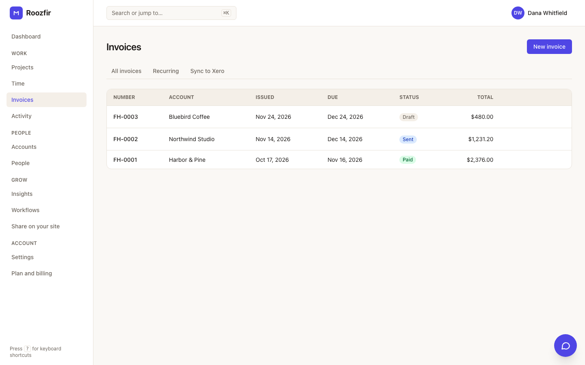
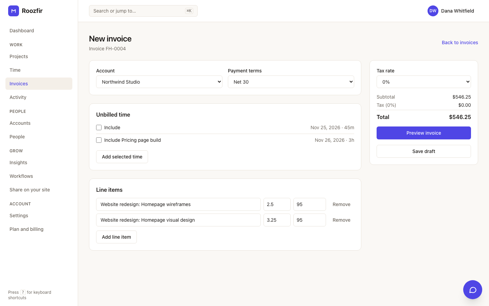
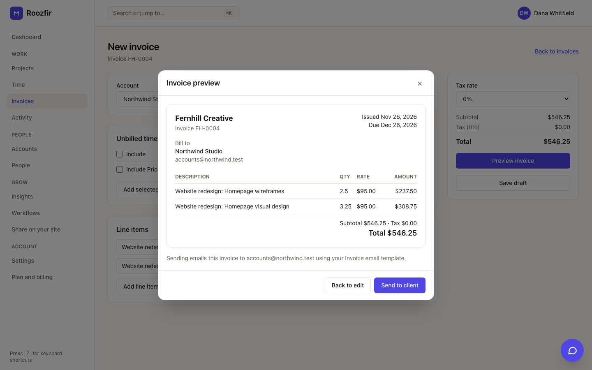
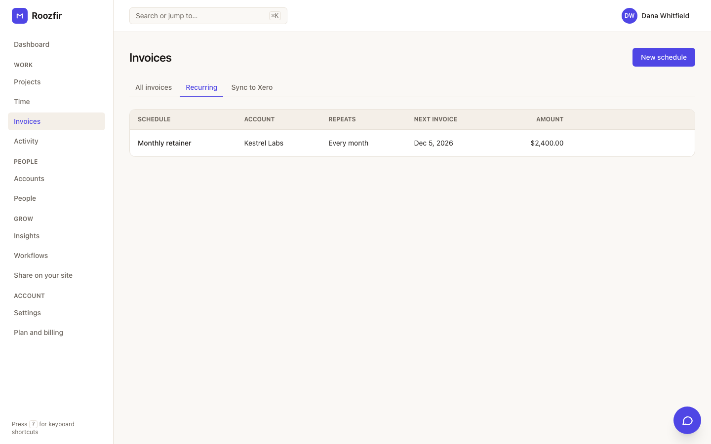

Help Center » Customers and invoices
The complete invoicing guide
This guide takes you from your first customer to an invoice in their inbox, and then shows how to bill a customer automatically every month. It covers three jobs: adding an account, creating and sending an invoice, and setting up a recurring invoice.
Part 1. Add the customer
- Click Accounts in the left-hand menu. This is the list of your customers.

The Accounts page listing Northwind Studio, Bluebird Coffee, Harbor and Pine and Kestrel Labs - Click Add account, type the Name and Email, and, if this customer has their own rate, an hourly rate. Click Save account.
- Check that the new account is in the list. You only do this once per customer.
Part 2. Create and send an invoice
- Click Invoices. All your invoices are listed with their status: draft, sent or paid.

The Invoices page with three invoices and the New invoice button - Click New invoice and choose the Account.
- Tick Include next to the time entries you want to bill and click Add selected time. They become line items with the hours and the customer's rate. You can add more lines with Add line item and choose a Tax rate.

The invoice editor with two time entries added as line items - Click Preview invoice. Read it through, then click Send to client.

The invoice preview with the line items, tax and total and the Send to client button
Part 3. Bill a customer every month
- On the Invoices page open the Recurring tab.

The Recurring tab listing a monthly retainer for Kestrel Labs - Click New schedule. Choose the account, give it a title such as "Monthly retainer", enter the amount and choose how often it repeats.
- Pick the Start date in the date picker. Roozfir shows the next three dates so you can check them, then click Save schedule.
Tip: A recurring invoice is created on its date. You still send it yourself from the Invoices list.